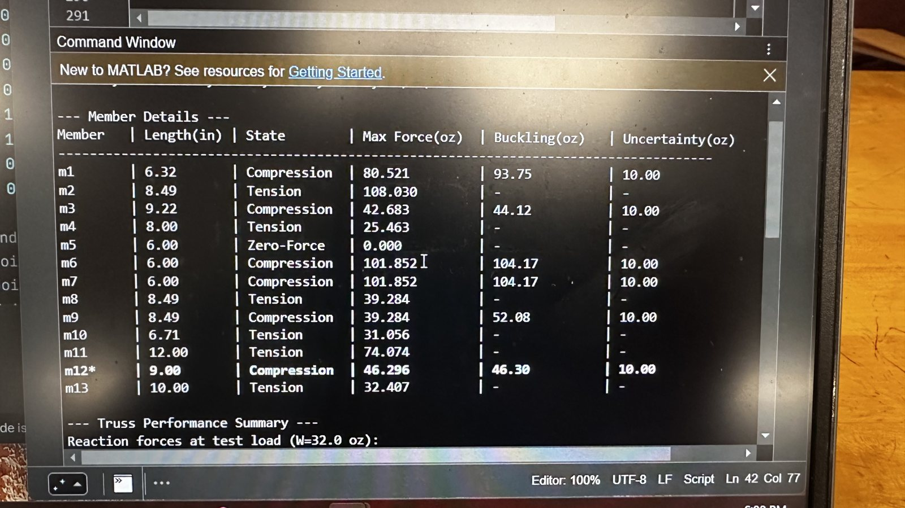
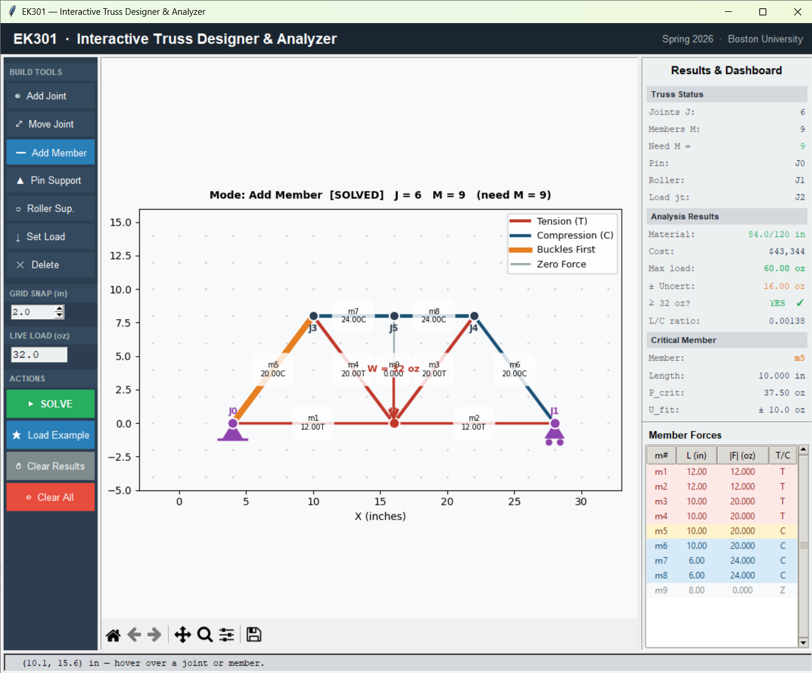
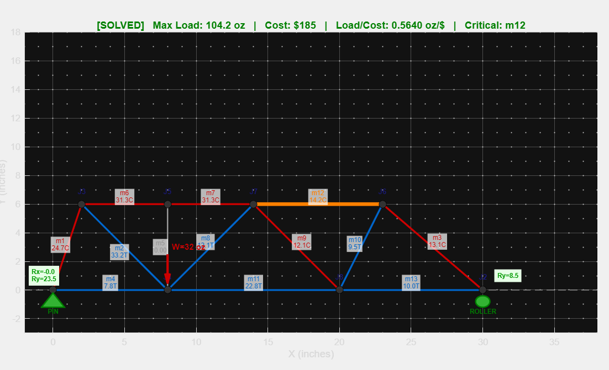
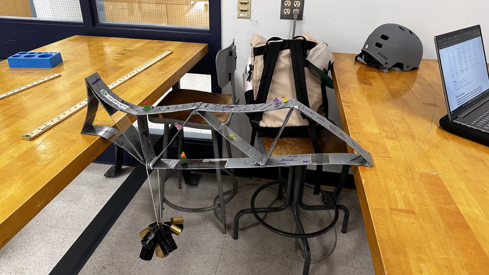

Optimized Acrylic Truss
Designed, analyzed, and built an acrylic truss using custom MATLAB tools I wrote to predict member forces, buckling, and cost. It held 123.46 oz, placing in the top 5 of roughly 50 teams, and failed at exactly the member my model predicted.
Optimized Truss Design
Overview
In Engineering Mechanics: Statics (EK301) at Boston University, teams were challenged to design, analyze, and build an acrylic-strip truss that carried the most load for its cost, calculated using a predetermined equation from the design manual. Designs had to follow strict geometric rules: a 26–30″ total span, joint-to-joint spans between 6″ and 14″, and a fixed load position. On my team, I built the analysis model, designed the geometry, and constructed the final truss.
Our truss supported 123.46 oz, 18.5% above our predicted 104.17 oz and within our uncertainty bounds. It failed at member m12, exactly the member our model predicted would fail first.
Building the Analysis Tools
Equilibrium Solver
I wrote two MATLAB programs for the project over roughly 8–10 hours. The first, an analysis script, builds the truss's full equilibrium matrix from joint positions and a connection matrix, solving every joint simultaneously for all member forces and support reactions. It then predicts failure using the course's empirical buckling model, P = 37.5·(10/L)² oz with a ±10 oz fit uncertainty, to find which compression member buckles first, the truss's maximum load, its cost, and its load-to-cost ratio. Built-in checks reject any truss that isn't statically determinate (M = 2J − 3) or is geometrically unstable.

Interactive Truss Builder
The second is an interactive truss builder, modeled after the Johns Hopkins truss simulator but designed specifically for our project's rules. You click to place joints and connect members on a snapping grid, set supports and the load, and solve instantly: members color by tension, compression, and critical failure. Every project rule is checked live. Members outside the 6–14″ range turn red, and the status panel flags violations of the 26–30″ span, the load position window, the 120″ material budget, crossing members, and more. Finished designs export directly into the analysis script.

Validation
I also built a Python version for faster iteration, but moved back to MATLAB since it was a project requirement. To avoid confirmation bias, a teammate verified the program against independent hand calculations on three test trusses of increasing complexity, from 3 to 21 members, before we trusted it. A teammate then used the builder to design and optimize our final truss.
Designing for Load-to-Cost
We started from a Pratt truss and refined it from there. Because buckling strength falls with the square of member length, our strategy was to shorten compression members and let tension members, which don't buckle, run longer. Once the model identified a critical member, we adjusted the geometry to reduce the load it carried, then re-solved to find the next weakest link, repeating until the design converged.
We originally optimized for maximum load, but shortly before the deadline the project's goal shifted to load-to-cost ratio. Since cost was calculated from the number of joints plus total member length, every added joint and inch of material now had to earn its place. Our final design used 8 joints and 13 members across a 30″ span, with 105″ of material at a cost of $185, and a predicted capacity of 104.17 oz ± 22.50 oz, with member m12 as the critical member.

Building & Testing
We cut each member by scoring the acrylic with an X-Acto knife and snapping it cleanly along the line, then sanded the corners to take off sharp edges. To get the tape joints to hold, we cleaned every piece with rubbing alcohol and let it dry before assembly, since a clean surface gave the tape a far stronger bond. The build itself came together quickly. Before testing, the truss was passed around the room and decorated by our team and classmates with good-luck charms and words of encouragement.
In testing, the truss first held the required 32 oz baseline for 60 seconds, then weight was added gradually until it showed the level of visible bowing the TA defined as failure. It reached that point at 123.46 oz (3,500 gf), 18.5% above our 104.17 oz prediction and within our uncertainty bounds, with member m12 bowing exactly as our model predicted. That placed us in the top 5 of roughly 50 teams for load capacity, with a final load-to-cost ratio of 0.67 oz/$. After the official test, we kept adding weight, and the truss still didn't snap.
We attribute the margin above prediction largely to the joints: the rules allowed unlimited duct tape, and our well-bonded joints made the structure stiffer than the pin-jointed model assumes.

Outcomes
Top 5 of ~50 teams: 123.46 oz supported, with the failure point predicted exactly.
- Built an interactive MATLAB truss builder with live enforcement of every project rule.
- Wrote an equilibrium-matrix solver predicting member forces, buckling, cost, and load-to-cost.
- Validated the software against independent hand calculations on three test trusses.
- Exceeded predicted capacity by 18.5% and correctly identified the critical member.
What I'd Do Differently
I'd add supports beneath the fixed joints, the approach the top load-to-cost team used.
Takeaway
Building my own tool showed me how much a coding environment can do for design: it let us find optimal designs faster and saved a huge amount of time compared with working each iteration by hand.
- Context
- BU EK301 · Engineering Mechanics: Statics
- Tools Used
- X-Acto knife, sandpaper, duct tape
- Software
- MATLAB, Python
- Year
- Spring 2026